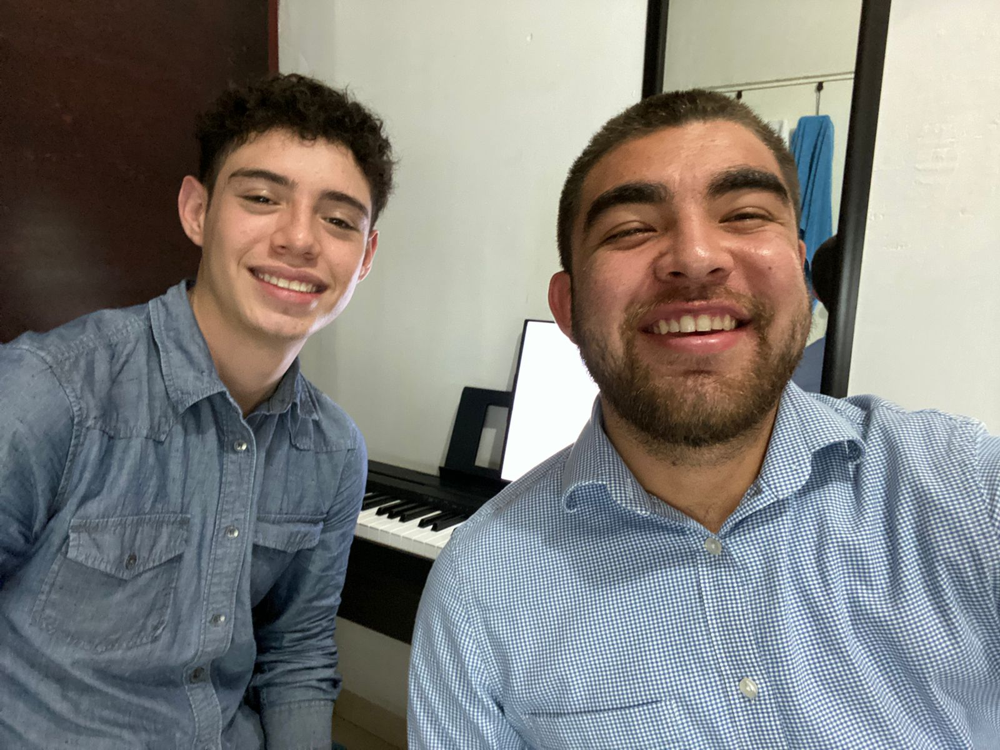
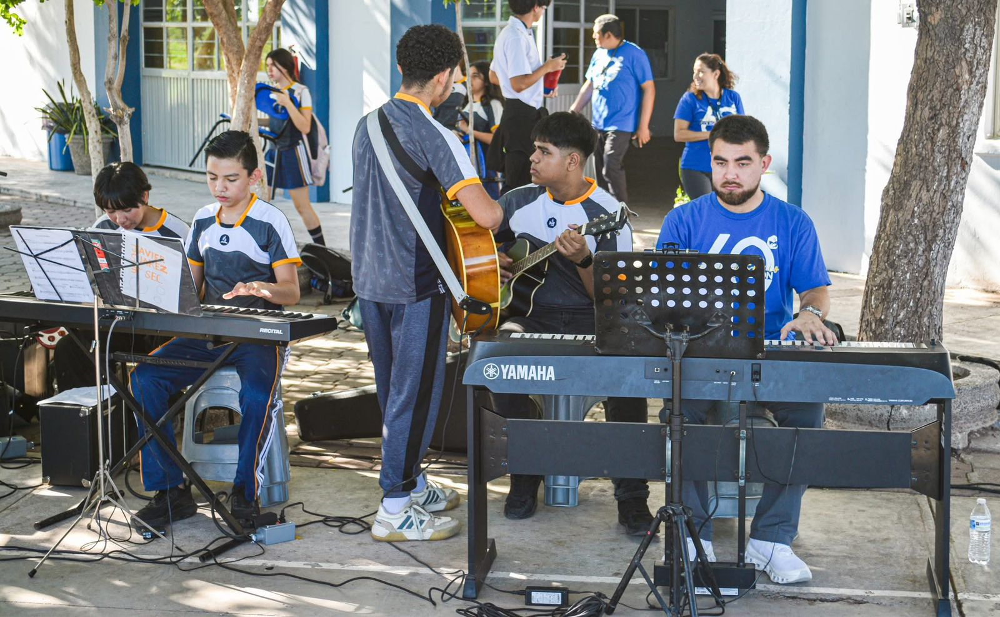
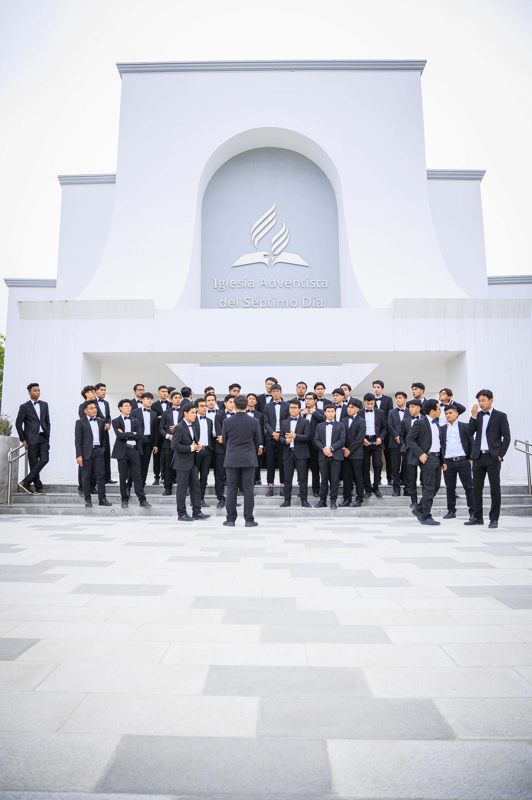
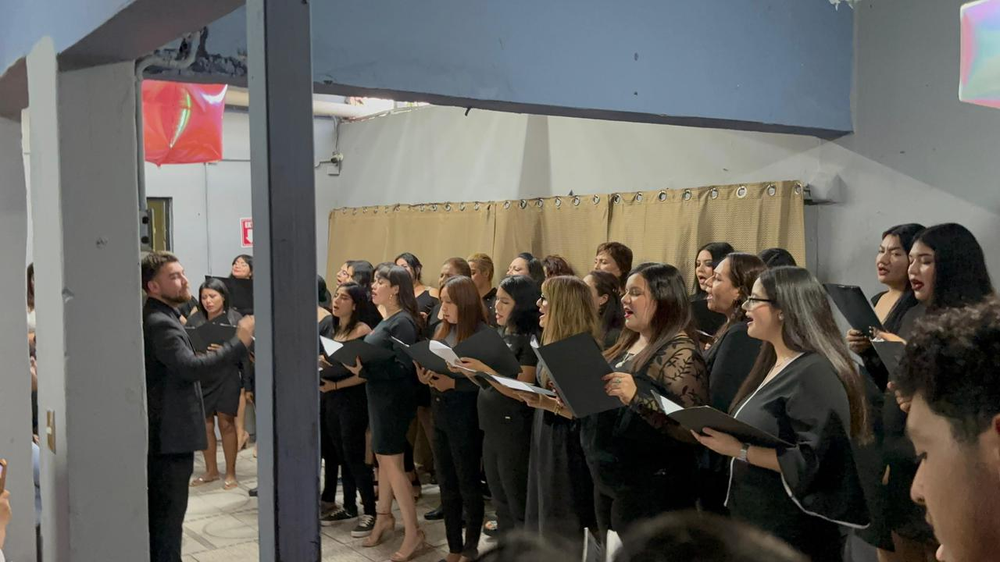
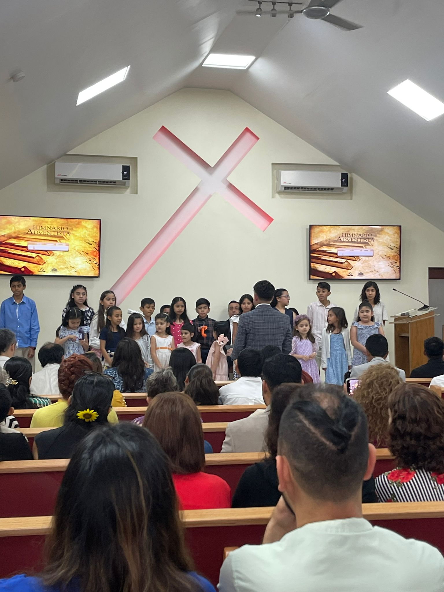
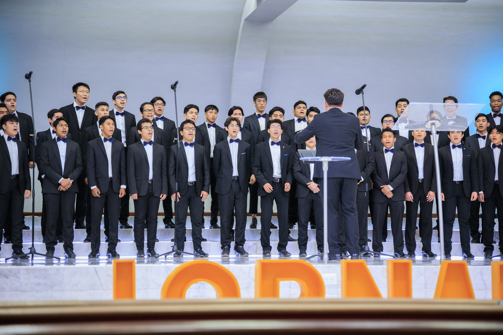
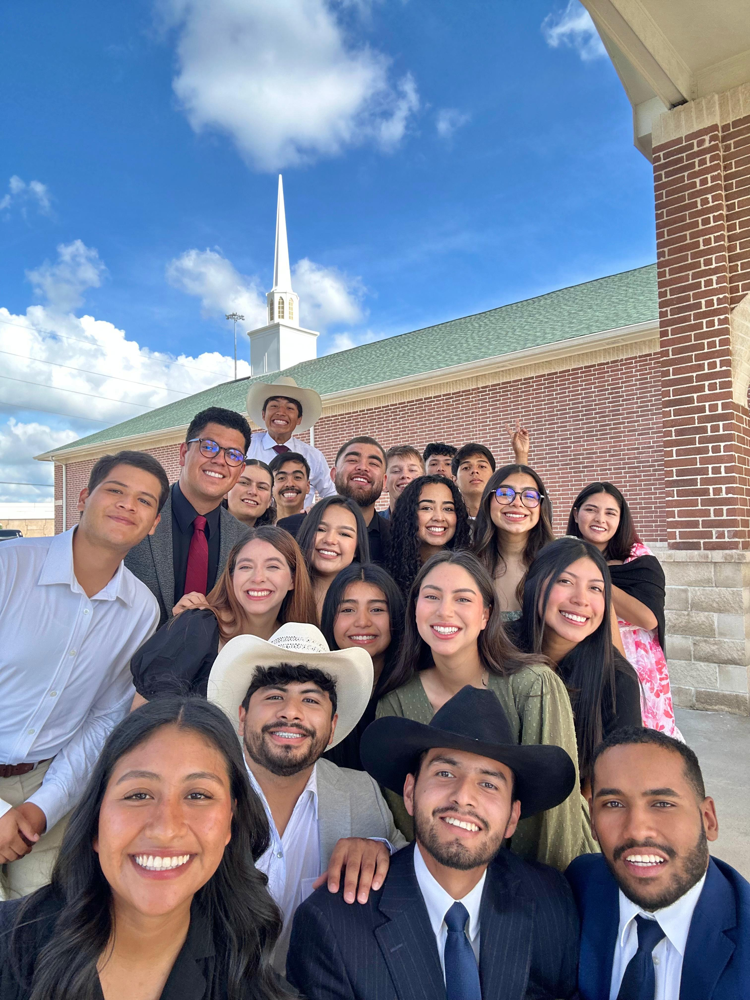
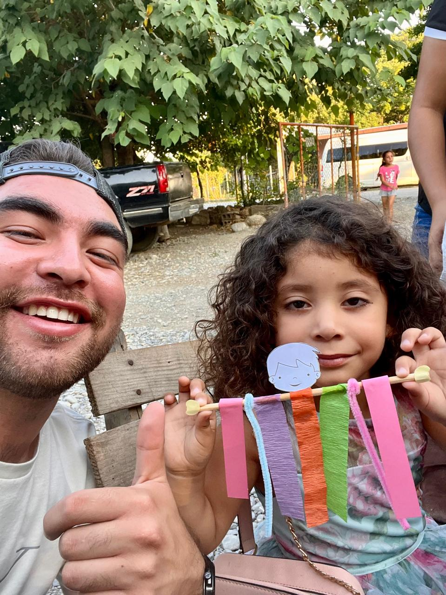

Festival Navideño — Isaías
Colegio Obregón · 2023

Coros del Colegio
Dirección coral · Colegio Obregón

Banda Escolar
Dirección de banda · Colegio Obregón

Clase de Música
Solfeo y teoría · Primaria

Enseñanza de Piano
Clases particulares · 2021–Presente

Taller Contemporáneo
Música cristiana · Colegio Obregón

Proyecto Barca
Distrito Constitución · Obregón, Sonora

Taller Coral Barca
Ensayo semanal · Viernes 6:30 pm

Actividades con Niños
Estaciones creativas · Proyecto Barca

Cantata del Arca de Noé
Evento final comunitario · Proyecto Barca

Taller Coral ABBA
Centro de Rehabilitación · Obregón, Sonora

Ensayo Coral ABBA
Miércoles y viernes · 5:00–6:00 pm

Dinámica de Integración
Actividad grupal · Taller Coral ABBA

Presentación Final ABBA
Cierre del taller · Noviembre 2025

Coro Varonil Universitario
Fundador y director · UM 2022–2025

Coro Femenino ABBA
Fundadora y directora · Obregón 2022–2024

Coro Kodály — Momentux
Academia Momentux Musicalis · 2022–2024

Dirección Coral
Ensamble vocal · Montemorelos

Misión Internacional
Trinidad · Egipto · Marruecos

Texas Conference — Literatura
Líder de 6 programas · EUA

JAM — Alcance Rural
Servicio médico, educativo y espiritual

Ejecución al Piano
Interpretación · Pianista funcional

Instrumento de Viento
Saxofón · Clarinete · Alientos madera

Perfil Profesional
Músico-Educador · UM 2026
🔍
No hay fotos en esta categoría aún.